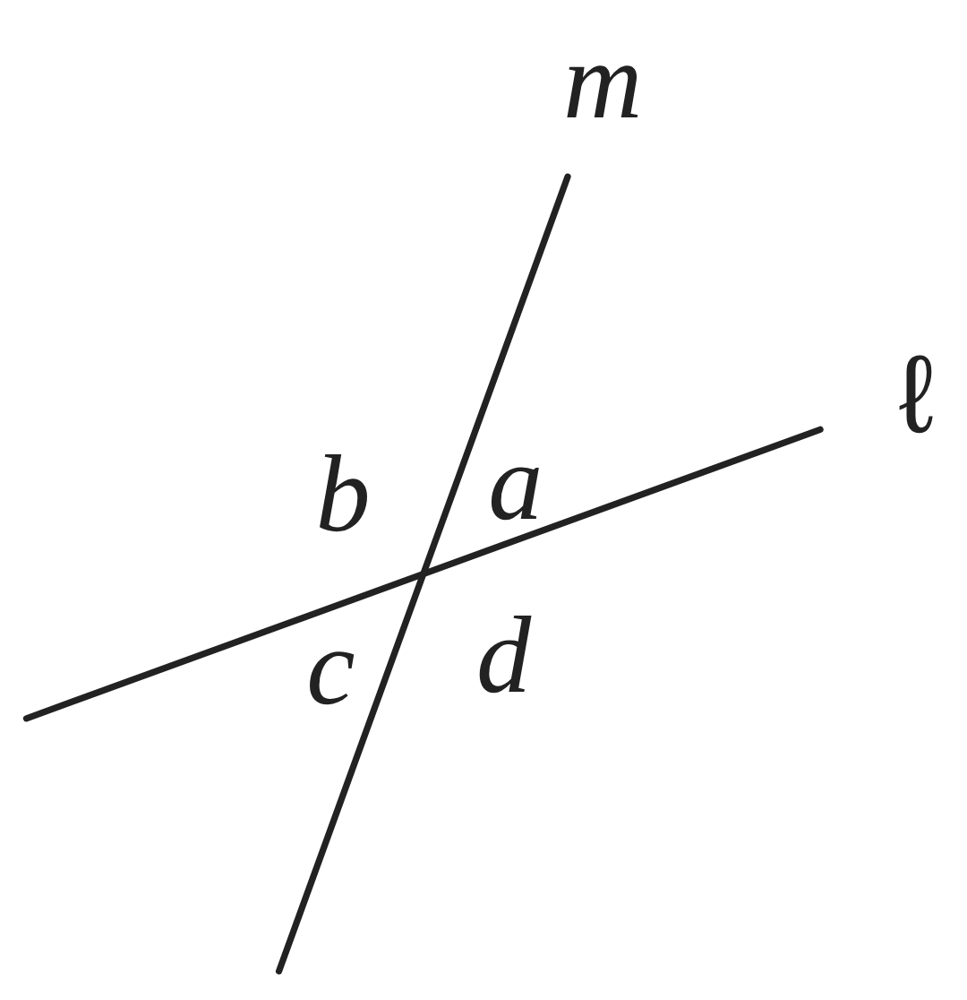
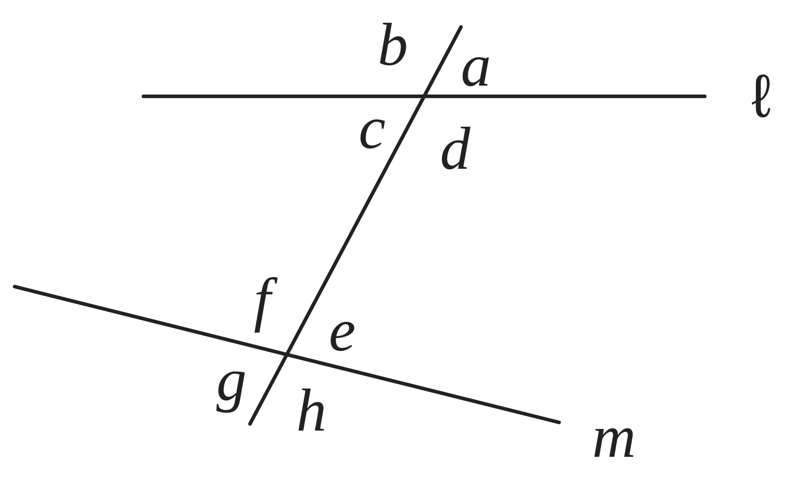
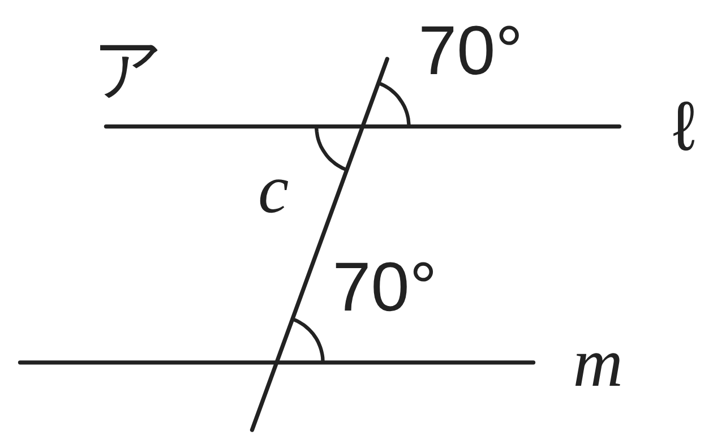
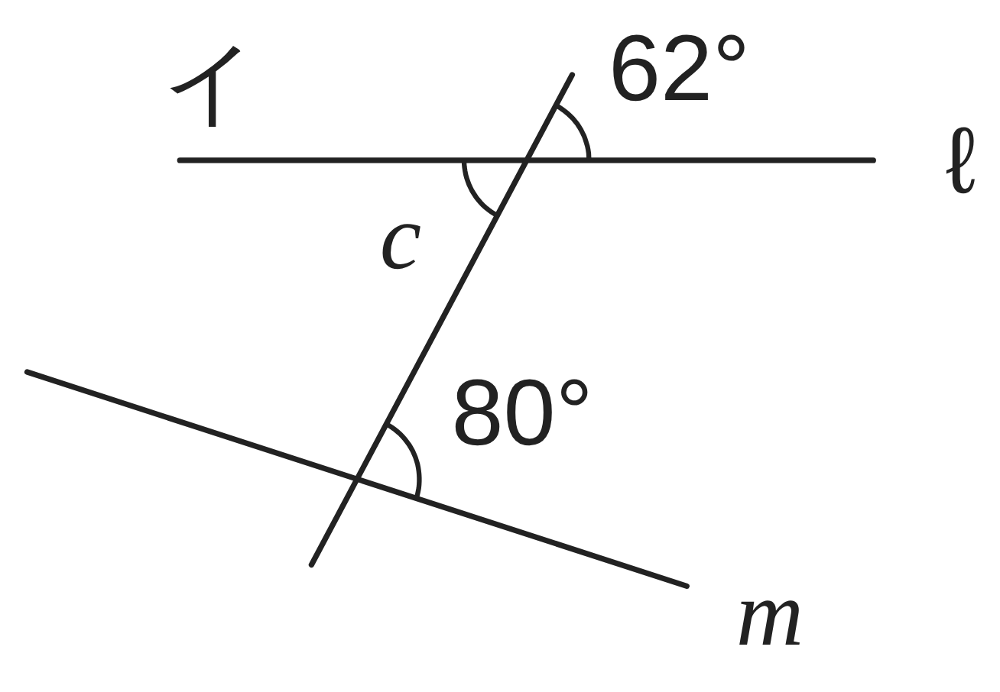
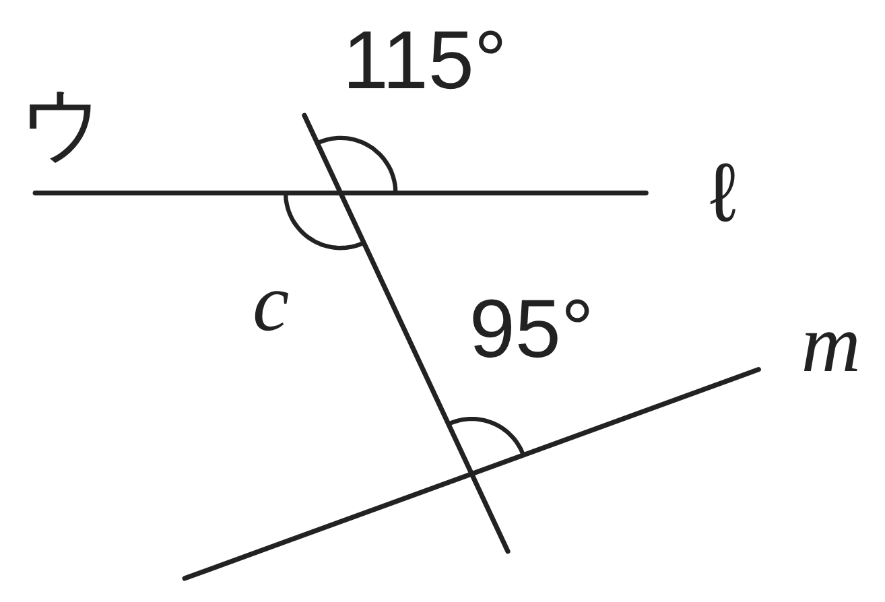

ペア学習
第1時 2直線が交わってできる角には、どんな関係があるだろう
1年で習った図形のことばを、ペアで出し合おう
1年「平面図形」のことばから、1人1問ずつ、選んで出題する。
聞かれた人は、そのことばの意味を、自分の言葉で言う。
平行
垂直
垂直二等分線
角の二等分線
平行と合同 第1時 2直線が交わってできる角には、どんな関係があるだろう
めあて
第1時 2直線が交わってできる角には、どんな関係があるだろう
2直線が交わってできる角には、どんな関係があるだろう
学習課題
右の図のように、2直線 ℓ、m が交わっている。
∠a＝50° のとき、∠b、∠c、∠d の大きさは、
それぞれ何度だろう。分度器を使わずに求めよう。
また、向かい合う角（∠a と ∠c など）の
大きさの関係は、∠a が 50° 以外のときも
成り立つだろうか。そのわけも、説明しよう。

平行と合同 第1時 2直線が交わってできる角には、どんな関係があるだろう
学習課題のまとめ
第1時 2直線が交わってできる角には、どんな関係があるだろう
【求め方】
∠b＝180°−50°＝130°
∠c＝180°−130°＝50°
∠d＝180°−50°＝130°
【気づいたこと】
向かい合う角は、等しい。
∠a＝∠c＝50°、∠b＝∠d＝130°
【わけ】
∠a＋∠b＝180° より ∠a＝180°−∠b
∠c＋∠b＝180° より ∠c＝180°−∠b
よって ∠a＝∠c
（∠b＝∠d も同じ。∠a が何度でも、成り立つ。）

平行と合同 第1時 2直線が交わってできる角には、どんな関係があるだろう
ことば
第1時 2直線が交わってできる角には、どんな関係があるだろう
2直線が交わってできる角のうち、
向かい合う角を という。
対頂角は 。
例題の図の ∠a と ∠e のように、
同じ位置にある角を 、
∠c と ∠e のように、2直線の内側で、
ななめ向かいにある角を という。

平行と合同 第1時 2直線が交わってできる角には、どんな関係があるだろう
ことば
第1時 2直線が交わってできる角には、どんな関係があるだろう
2直線が交わってできる角のうち、
向かい合う角を対頂角という。
対頂角は等しい。
例題の図の ∠a と ∠e のように、
同じ位置にある角を同位角、
∠c と ∠e のように、2直線の内側で、
ななめ向かいにある角を錯角という。

平行と合同 第1時 2直線が交わってできる角には、どんな関係があるだろう
例題
第1時 2直線が交わってできる角には、どんな関係があるだろう
右の図で、∠ について、
次の角を答えよう。
（1）対頂角 … ∠
（2）同位角 … ∠
（3）錯角 … ∠
∠のあとの文字は、先生が言ってから書こう。
平行と合同 第1時 2直線が交わってできる角には、どんな関係があるだろう
例題 解答
第1時 2直線が交わってできる角には、どんな関係があるだろう
∠d について
（1）対頂角 … ∠b
（2）同位角 … ∠h
（3）錯角 … ∠f
【見つけ方】
対頂角 … 2直線の向かい合う角（X の形）
同位角 … F の形 錯角 … Z の形
平行と合同 第1時 2直線が交わってできる角には、どんな関係があるだろう
考えよう
第1時 2直線が交わってできる角には、どんな関係があるだろう
2直線 ℓ、m に、直線 n が交わっている。同位角や錯角は、いつも等しいといえるだろうか。
① ∠c の大きさを求め、
同位角（∠a と ∠e）・
錯角（∠c と ∠e）が等しいか
調べよう。（○か×）
② 気づいたことを書こう。
③ 同位角が等しくなるのは、
2直線 ℓ、m が、どんなときだろう。
予想しよう。



発展
3本の直線が1点で交わっているとき、となり合う3つの角の和は、何度になるだろう。理由も考えよう。
平行と合同 第1時 2直線が交わってできる角には、どんな関係があるだろう
振り返り
第1時 2直線が交わってできる角には、どんな関係があるだろう
今日のめあて
2直線が交わってできる角には、どんな関係があるだろう
対頂角
同位角
錯角
今日わかったことを、ペアで1つずつ言い合おう。
ワークシートと演習プリントを出そう。（未完成でも出す）
平行と合同 第1時 2直線が交わってできる角には、どんな関係があるだろう